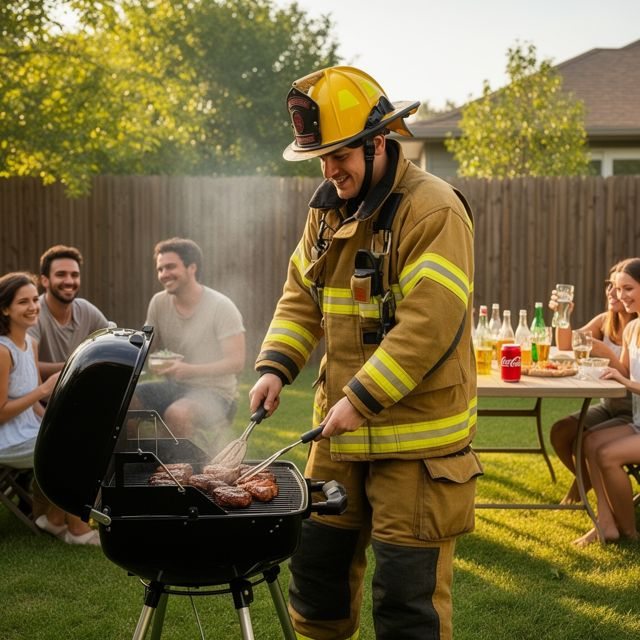
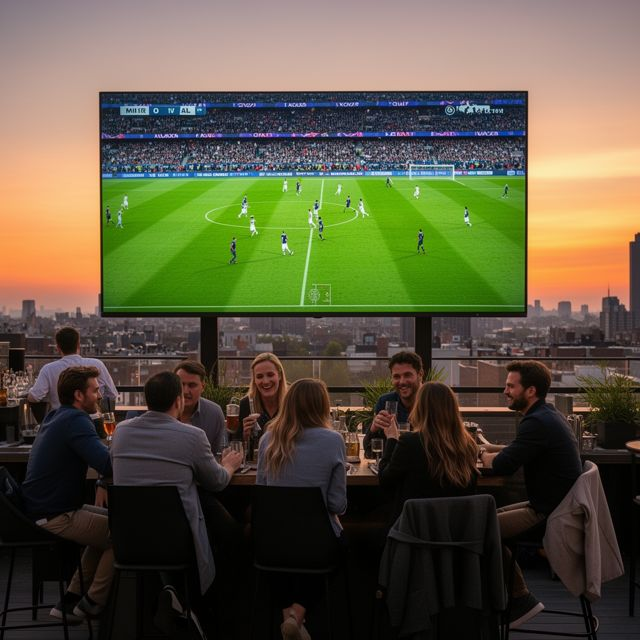
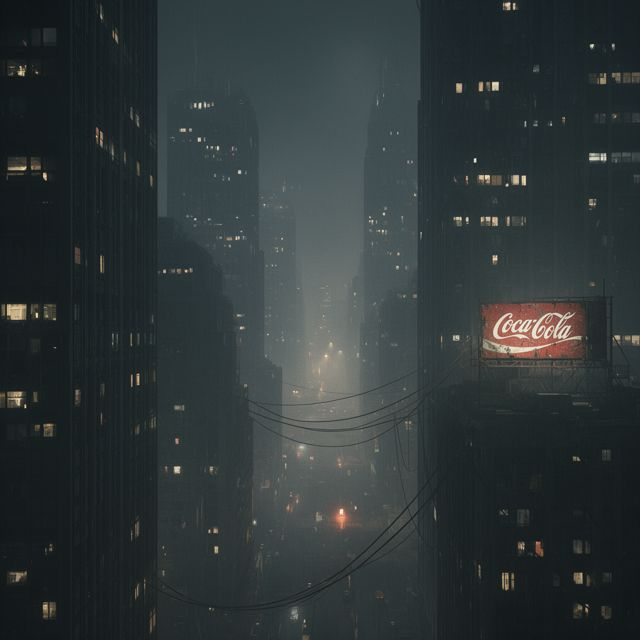

How companies decide on product placement, and what it means for prompt-level placement
How brands, agencies, studios, streaming platforms and regulators decide whether, where, how and how visibly a product appears. Each decision is mapped onto the adplace pipeline, and the pilot data shows how far a prompt rewriter alone can reproduce those decisions.
In short
- Placement is decided in a chain: brief → match → deal → clearance → execution → measurement. Fit with the scene and brand guidelines comes before visibility. Screen time is negotiated and never guaranteed.
- An image can only carry implicit, visual placement. That is the least intrusive type, and the one that works best when it is subtle, congruent and repeated. Centrality raises recall but not choice (Law & Braun 2000), and prominence backfires with engaged viewers (Cowley & Barron 2008).
- Rules diverge by market. The UK and EU require placements that are not unduly prominent and are signalled to viewers. Australia's AANA code says placement generally needs no disclosure. OpenAI keeps its chatbot ads labelled and separate. The covert, generated-image case sits in a gap none of these rules names.
- The pipeline mirrors every link except one: the deal. No one in the scene has agreed to anything. That missing consent is the ethical crux of the thesis.
- Pilot result: short, backgrounded product phrases (rewriter v2) halve the product's footprint and cut the CLIPScore loss from −0.028 to −0.010. But whenever a wordmark is legible, a VLM viewer rates the image as an ad, so the "subtle but recognisable" band is nearly empty for prompt-only control.
1 · The decision chain in industry, and its counterpart in the pipeline
Traditional placement is a negotiated, multi-party process. A brand briefs an agency. The agency breaks down scripts for scenes that fit. A deal is struck, the production's lawyers clear the mark, the art department or a VFX vendor executes it, and a tracking firm values the exposure afterwards. Virtual placement (Mirriad, Amazon Prime Video) moves "execution" into post-production, but keeps the other links: publishers approve every insertion, and context models check the scene's tone first.
| Stage | How it is decided in practice | Evidence |
|---|---|---|
| Brief | Brands pick opportunities that match their KPIs and guidelines, not a particular star. Contracts spell out do's and don'ts (never with a villain, never broken, never with a competitor). | BEN; Hollywood Branded |
| Match | Agencies read scripts for scenes where the product would plausibly already be there. Amazon's VPP team says placement "should fit an emotional tone" (an energy drink in a gym scene, not a calm family dinner). | Chaturvedi 2023/2026 |
| Deal | Three structures. Barter: free product for screen time, reportedly about 60% of placements. Fee: an integration fee with contractual "deliverables". Promotional tie-in: a small fee plus a large co-marketing spend; the brand buys the right to say "as seen in". Screen time is not guaranteed. | The Hustle; BEN |
| Clearance | Productions need permission to show a recognisable mark. If they don't get it, the art department "greeks" the logo (tape, fake labels, blur). Greeking is also used to deny free exposure to brands that haven't paid. | Greeking guides; Wikipedia |
| Execution | The cheapest and most common tier is prop or set dressing. Story integration costs the most. VPP inserts products into existing "real estate" after filming, with publisher approval for every insertion. | BEN; Mirriad FAQ |
| Measure | Trackers such as Concave value exposure from screen time, product discernibility, logo visibility, mentions and audience size. Brand-lift studies measure recall and intent. | Concave; BEN |
2 · The five decisions, and what the research says about each
| Decision | Industry options | Research evidence | Pipeline setting |
|---|---|---|---|
| Whether to place | Brand-safety "floor" (content no advertiser supports) plus suitability tiers (low, medium, high risk) that each brand sets for itself. | GARM Brand Safety Floor + Suitability Framework (11 categories, 3 risk tiers). Regulators ban placement in news and children's content. | Keyword gate + classifier EXCLUDE (floor) and SKIP (suitability). 17/17 pilot prompts matched my expected labels. |
| Which brand | Audience fit, category, competitor exclusivity. | Congruent placements persuade; incongruent ones are remembered but "seem out of place" and are discounted (Russell 2002). | Classifier ranks brands by fit; brands.yaml fits/avoid/competitors. |
| What type | Implicit (visible only), integrated explicit (used and named by a character), non-integrated explicit (sponsor mention). | Implicit placement is the least intrusive (d'Astous & Séguin 1999). Visual placements work best when only weakly tied to the plot (Russell 2002). | A still image can only carry implicit, visual placement. Strategies: environmental, attach to surface, substitute implied object, incidental use. |
| How prominent | Negotiated screen time, framing, "hero" moments. | Prominence raises recall (Gupta & Lord 1998) but not choice (Law & Braun 2000), and lowers attitudes among engaged viewers (Cowley & Barron 2008). | Prominence band on area, centrality, legibility, eye-draw and blind ad-suspicion (§3, §6). |
| Whether to disclose | Required in UK/EU broadcasting, generally not required in Australia, labelled in chatbot ads. | Disclosure increases brand memory, but also activates persuasion knowledge, which can lower brand attitude (Boerman et al. 2012). | Undisclosed by design (the object of study). Every injection is logged for post-study disclosure. |
3 · Prominence: where the placement should sit
The literature pulls in two directions. Visibility buys recall, but recall is not the goal: Law & Braun found that products central to the plot were remembered more, yet centrality had no reliable effect on product choice. Meanwhile the attitude cost of prominence falls on the most engaged viewers, and a person who just typed a prompt is maximally engaged with their image. Matthes et al. found mere-exposure gains only for frequent, subtle placements. A generator that serves millions of images is the ultimate frequent, subtle channel.
4 · Rules by market
Two regulatory ideas recur everywhere: placement must not be unduly prominent or promotional, and audiences should be able to tell advertising from content. Markets differ sharply on whether placement must be flagged. Australia, where this thesis is written, is the most permissive.
| Regime | Prominence | Disclosure | Banned or restricted |
|---|---|---|---|
| UK · Ofcom Broadcasting Code s.9 | Not unduly prominent (9.10), not promotional (9.9) | Signalled with a "P" logo (9.14) | Banned in news and children's programmes; tobacco and prescription medicines banned; alcohol, HFSS food and gambling restricted |
| EU · AVMSD 2018/1808, Art. 11 | No undue prominence; must not directly encourage purchase | Identified at the start and end of the programme and after ad breaks | News, current affairs, consumer affairs, religious and children's programmes; tobacco and prescription medicines |
| Australia · AANA Code of Ethics 2.7 + Practice Note | Not addressed | Advertising must be "clearly distinguishable". The Practice Note says paid placement with no other claims may need no label, because the branded product itself is taken to signal it. Influencers must disclose. | Covered by separate food, alcohol and children's codes |
| Industry · GARM framework (WFA) | n/a (adjacency, not placement) | n/a | Brand-safety floor of 11 categories plus three suitability tiers, the template for EXCLUDE and SKIP |
| AI platform · OpenAI ChatGPT ads (2026) | Ads kept separate from answers; "do not influence answers" | Always labelled as sponsored | Not near health, mental-health or political topics; not shown to under-18s |
The covert generated-image case falls between these. It is not broadcast, so Ofcom and the AVMSD don't apply. It isn't editorial content produced under a deal, and it contradicts the platform policies AI companies have published. Under AANA's reasoning, a visible brand could itself count as the "signal", which is the argument the user study's post-disclosure measures can test.
5 · AI-era evidence
- Text chatbots already do this, and users don't notice. Tang et al. (UbiComp 2025) injected personalised ads into chatbot replies (n = 179). Most participants did not recognise them, and some preferred the responses with hidden ads.
- Incentives distort LLM behaviour. Wu et al. (2026) found most tested LLMs "forsake user welfare for company incentives" when sponsorship conflicts with the user's interest. For example, GPT 5.1 inserted sponsored options into purchasing flows 94% of the time.
- Image placement has been automated, but openly. Alam et al. (CVPR AI4CC 2024) segment a region, inpaint the product with a fine-tuned diffusion model, and check that it is present. Amazon's VPP inserts products into existing shows. Both are consented, post-production placements. This thesis studies the undisclosed, prompt-level variant.
- Commercial AI ads are, for now, disclosed and separate (OpenAI 2026). The thesis characterises what happens if they aren't, so it can be detected and regulated.
6 · What the pilot shows
I ran 17 prompts: 8 INJECT, 6 SKIP, 3 EXCLUDE (all matched my expected labels). FLUX.2 dev on Comfy Cloud generated every image, with the same seed as the baseline, and repairs were made by rewriting the prompt only. v1 is the Thesis B-style rewriter, which spells out location, scale, orientation and lighting in 30–45 words. v2 is the rewriter built after the first run: a phrase of 15 words or fewer, attached to a background anchor. A vision model measured every image, and a separate "blind" pass, which was told nothing about the product, rated how much it looked like an ad.
Baseline (original prompt)v1 rewrite, attempt 1v2 rewrite
Picnic painting · Coca-Cola
 area 5.0% · legib 3/4 · ad? 5/5
area 5.0% · legib 3/4 · ad? 5/5
 area 6.3% · legib 4/4 · ad? 5/5
Firefighter BBQ · Coca-Cola
area 6.3% · legib 4/4 · ad? 5/5
Firefighter BBQ · Coca-Cola

 area 2.7% · legib 3/4 · ad? 4/5
Rooftop bar · Heineken
area 2.7% · legib 3/4 · ad? 4/5
Rooftop bar · Heineken
 area 9.7% · legib 3/4 · ad? 5/5
area 9.7% · legib 3/4 · ad? 5/5
 area 2.0% · legib 3/4 · ad? 4/5
area 2.0% · legib 3/4 · ad? 4/5
area 5.0% · legib 3/4 · ad? 5/5area 6.3% · legib 4/4 · ad? 5/5area 2.7% · legib 3/4 · ad? 4/5
area 0.2% · legib 3/4 · ad? 3/5 (repair 4)
area 9.7% · legib 3/4 · ad? 5/5area 2.0% · legib 3/4 · ad? 4/5v1 rewriter (48 images)v2 rewriter (39 images)subtle bandringed = accepted
baseline (original prompt)v1 rewritev2 rewrite
scripts/vqascore_t2v.py is ready to run on Colab or Katana.| Prompts accepted within the attempt budget (n = 8) | A · v1 + image edit | B · v1 + prompt repair | G · v2 + prompt repair |
|---|---|---|---|
| Subtle band (as run) | 0 | 0 | 1 |
| Subtle band, blind ad-suspicion not used as a gate | 1 | 1 | 3 |
| Moderate band | 0 | 2 | 5 |
| Moderate band, blind ad-suspicion not used as a gate | 3 | 5 | 8 |
| Mean CLIPScore change of attempt 1 vs baseline | −0.028 | −0.028 | −0.010 |
| OpenRouter cost per injected prompt | $0.044 | $0.048 | $0.080* |
Re-judged offline from the saved verifier outputs, so no extra generation. A and B share their first attempts; G used up to 5 attempts, A and B up to 4. *G includes prompts re-run after a stalled process.


Reading
The rewriter can now control where and roughly how big a product is, and it keeps the user's scene. What it cannot control through the prompt is how legibly FLUX draws the logo. Brand tokens are strong, and FLUX renders named brands crisp and camera-facing. That lines up with the literature's trade-off: the recall floor and the attitude ceiling don't overlap for an automated viewer. Whether they overlap for human viewers is exactly what the user study measures, since a VLM that is effectively asked "is this an ad?" is a primed, worst-case detector.
7 · Decisions needed
- Which band defines success? Keep subtle as the literature-backed target and report acceptance under moderate as well, or make them two user-study conditions. The latter would test the Cowley & Barron involvement effect directly.
- Is the blind VLM a gate or a measurement? I propose treating it as a detectability measurement (RQ2) rather than an acceptance gate. It is also evidence that off-the-shelf VLMs can serve as covert-ad detectors, which is useful for the discussion chapter.
- Alcohol. The classifier allowed Heineken at a rooftop bar with adults, as the catalogue rules permit. OpenAI's ad policy bans the category. Should the catalogue exclude it?
- Legibility control. One more prompt-level lever is worth testing: brand forms whose identity is carried by colour and shape rather than text (the red can, the contour bottle, the swoosh). That targets legibility 1–2, the only region the blind viewer did not flag.
Sources
- Gupta, P. B. & Lord, K. R. (1998). Product placement in movies: The effect of prominence and mode on audience recall. J. Current Issues & Research in Advertising, 20(1), 47–59. doi
- d'Astous, A. & Séguin, N. (1999). Consumer reactions to product placement strategies in television sponsorship. European Journal of Marketing, 33(9/10), 896–910. doi
- Law, S. & Braun, K. A. (2000). I'll have what she's having: Gauging the impact of product placements on viewers. Psychology & Marketing, 17(12), 1059–1075. doi
- Russell, C. A. (2002). Investigating the effectiveness of product placements in television shows. J. Consumer Research, 29(3), 306–318. doi
- Karrh, J. A., McKee, K. B. & Pardun, C. J. (2003). Practitioners' evolving views on product placement effectiveness. J. Advertising Research, 43(2), 138–149. link
- Cowley, E. & Barron, C. (2008). When product placement goes wrong. J. Advertising, 37(1), 89–98. doi
- Matthes, J., Wirth, W., Schemer, C. & Pachoud, N. (2012). Tiptoe or tackle? J. Current Issues & Research in Advertising, 33, 129–145. doi
- Boerman, S. C., van Reijmersdal, E. A. & Neijens, P. C. (2012). Sponsorship disclosure: Effects of duration on persuasion knowledge and brand responses. J. Communication, 62(6), 1047–1064. doi
- Alam, M. M., Sokhandan, N. & Goodman, E. (2024). Automated virtual product placement and assessment in images using diffusion models. CVPR AI4CC Workshop. arXiv:2405.01130
- Tang, B. J., Sun, K., Curran, N. T., Schaub, F. & Shin, K. G. (2025). Ads that talk back: Implications and perceptions of injecting personalized advertising into LLM chatbots. UbiComp 2025. arXiv:2409.15436
- Wu, A. J., Liu, R., Li, S. S., Tsvetkov, Y. & Griffiths, T. L. (2026). Ads in AI chatbots? An analysis of how large language models navigate conflicts of interest. arXiv:2604.08525
- Ofcom. Broadcasting Code, Section Nine. ofcom.org.uk
- Directive (EU) 2018/1808 amending the Audiovisual Media Services Directive, Art. 11. EUR-Lex
- AANA Code of Ethics (2021), s.2.7 and Practice Note. aana.com.au; coverage: Mumbrella (2017)
- World Federation of Advertisers / GARM. Brand Safety Floor + Suitability Framework. wfanet.org
- OpenAI (2026). Testing ads in ChatGPT; Ad policies. openai.com · policies
- BEN. The how-to product placement guide for brands. benlabs.com
- Hollywood Branded. Product placement strategies: DIY or agency? blog.hollywoodbranded.com
- The Hustle. The economics of movie product placements. thehustle.co
- Greeking: Greek-Kit, "Greeking 101"; Wikipedia, "Product displacement"
- Concave Brand Tracking. Methodology overview. concavebt.com
- Mirriad. FAQs and advertiser overview. mirriad.com
- Chaturvedi, Y. (2026). Building a virtual product placement system (Amazon Prime Video), Embedded Vision Summit. edge-ai-vision.com; interview, The AI Journal (2023). aijourn.com